Testbericht 6 – Projekte, Bauteile, include/use
1 Umfang
include <datei>/use <datei>mit OpenSCAD-Semantik: include fügt die Anweisungen der Datei an ihrer Stelle ein (Definitionen, Variablen, Geometrie; die letzte Zuweisung gilt, mit Warnung über die Dateigrenze); use macht nur Module und Funktionen sichtbar, die in ihrer eigenen Datei laufen (sehen deren Variablen und deren eigene use-Bibliotheken, nicht transitiv); eigene Definitionen vor benutzten, von mehreren use gilt das letzte. Pfade relativ zur einbindenden Datei (oder absolut). Zyklen und fehlende Dateien sind Fehler an der include/use-Zeile.- Datei-IDs in Quellpositionen: jede geladene Datei belegt einen eigenen Bereich der Positionen (Datei f ab f·224, Anweisungs-IDs ab f·222); Diagnosen, Hinweise, Griffe, Spans und Text-Edits kennen damit ihre Datei. Das Protokoll gibt Positionen lokal zur Datei aus (
SrcRange.file,Diagnostic.file,Edit.file,Scene.files); Rückschreiben trifft die richtige Datei. - Datei-Resolver:
cad-evalliest Projektdateien über den TraitFileResolver(Dateisystem für die CLI, Map für Session/Wasm). Die Session bekommt die Dateien mitSetFiles/SetFile. Der Engine-Cache ist unverändert (Schlüssel aus dem Inhalt). - Projekte in der UI: Dateien als Tabs über dem Editor (eigene Undo-Historie je Datei), Hauptdatei wählbar (★), neue Dateien, Entfernen; Ordner öffnen (File System Access API, Speichern schreibt zurück), sonst ZIP hoch- und herunterladen; Autospeichern des ganzen Projekts in IndexedDB; Beispielprojekte im Beispielmenü. Strg+Klick auf den Pfad in include/use öffnet die Datei; Doppelklick auf eine Instanz eines Moduls aus einer anderen Datei öffnet diese in der Definition; Griffe schreiben in die Datei des Literals (auch nicht angezeigte Dateien, ein Undo-Schritt dort); Fläche aus einer anderen Datei: Statuszeile nennt Datei und Zeile, Klick öffnet sie.
- Mehrere Bauteile (Offener Punkt 2, Plan 12.9): benannte Instanzen auf oberster Ebene der Hauptdatei sind Bauteile. Szene mit Hülle und Volumen je Bauteil; Bauteilleiste mit Sichtbarkeit und Export STL/3MF/STEP je Bauteil, alle als ZIP oder ein 3MF mit einem Objekt je Bauteil. STEP geht über den gemeinsamen Export-Weg des Kernels (
Kernel::export). CLI:cad export --part name,--all-parts -o ordner/. - Benannte Instanzen in Schleifen (Plan 12 Punkt 2):
for (i = [0:3]) k[i]: halter();→k[2].anker; Index ganzzahlig, Sichtbarkeit wie benannte Instanzen, Snap schreibtk[2].ecke.k: …in einer Schleife bleibt ein Fehler. - Beispielprojekt
examples/projekt-gehaeuse/: gehaeuse.scad (Hauptdatei), konstanten.scad (include), lib/teile.scad (use, mit Schraubdomendom[i]), Bauteile gehaeuse und deckel.
2 Testumgebung
| Betriebssystem | Linux 6.18.44-fc-v153 (x64) |
|---|---|
| CPU | Intel(R) Xeon(R) Processor @ 2.10GHz · 4 Kerne |
| Node.js | v22.22.0 |
| Browser | Chromium 141.0.7390.37 (headless, Playwright 1.56.1), WebGL über SwiftShader |
| Fenster | 1440 × 900 px, Gerätepixelverhältnis 1 |
| Build | Vite 8.3.5 Produktions-Build; React 19.3.1, three.js 0.186.1, CodeMirror 6.43.15 |
| OpenSCAD | OpenSCAD version 2021.01 |
| Quelltext | Branch worktree-agent-a7438d365a2b87939, Commit 02c978c |
3 include/use gegen OpenSCAD 2021.01
Je Projekt in tests/openscad-compat/projects/ die ECHO-Zeilen von cad eval --json main.scad gegen expected.echo (mit openscad -o x.echo main.scad erzeugt) und gegen einen frischen OpenSCAD-Lauf. Derselbe Vergleich läuft als Rust-Test cad-eval/tests/project_openscad.rs.
| Projekt | Dateien | Echo-Zeilen | expected.echo | OpenSCAD jetzt |
|---|---|---|---|---|
| include_order | a.scad b.scad c.scad lib/inner.scad main.scad | 4 | gleich | gleich |
| lib_children | main.scad werkzeug.scad | 5 | gleich | gleich |
| nested_paths | lib/konst.scad lib/teile.scad main.scad shared/basis.scad | 6 | gleich | gleich |
| use_basics | a.scad b.scad lib/inner.scad main.scad | 6 | gleich | gleich |
use <a.scad>
module m() echo("own");
m();
x = 5;
include <c.scad>
echo(x=x, y=y);
cm();
echo(f());ECHO: "own" ECHO: x = 1, y = 10 ECHO: "cm", 1 ECHO: "b"
// Library modules with children, $-variables from the caller, functions calling each other // and recursion inside the library. use <werkzeug.scad> reihe(3, 5) sphere(1); echo(summe([1, 2, 3, 4])); echo(abstand(), $fn = 7); fn_test($fn = 12); echo(versatz = versatz);
ECHO: n = 3, kinder = 1 ECHO: 10 ECHO: 6, $fn = 7 ECHO: fn = 12, v = 3 ECHO: versatz = undef
// Relative paths: include in a subfolder, which includes from a sibling folder; a used // library that includes constants relative to itself. include <lib/konst.scad> use <lib/teile.scad> echo(wand = wand, rand = rand); echo(teil_breite(2)); teil(); echo(innen = innen); for (i = [0:1]) zeige(i);
ECHO: wand = 3, rand = 0.25 ECHO: 106 ECHO: teil = 3, innen = 100 ECHO: innen = 4 ECHO: i = 0, basis = 1.5 ECHO: i = 1, basis = 2.5
use <a.scad> use <b.scad> m(); echo(f()); echo(getla()); echo(la=la); showla($fn=5); callinner(); inner();
ECHO: "b" ECHO: "b" ECHO: 1 ECHO: la = undef ECHO: la = 1, fn = 5 ECHO: "inner", 7
4 Szenarien (Playwright, web/e2e/projekte.spec.ts)
| ID | Szenario | Ergebnis | Dauer | Geprüft |
|---|---|---|---|---|
| P01 | Beispielprojekt öffnen: Dateien als Tabs, Hauptdatei, Bauteile | bestanden | 2.0 s |
|
| P02 | Ordner öffnen (File System Access API), ZIP hoch- und herunterladen | bestanden | 3.0 s |
|
| P03 | Datei wechseln: Tabs, Kontext aus der Bibliothek, Undo je Datei | bestanden | 3.3 s |
|
| P04 | Strg+Klick auf include/use-Pfad öffnet die Datei | bestanden | 2.6 s |
|
| P05 | Griff ändert die eingebundene Datei (Variable aus include, Literal in der Bibliothek) | bestanden | 9.3 s |
|
| P06 | Hover und Klick über Dateigrenzen, Doppelklick öffnet das Modul der Bibliothek | bestanden | 3.5 s |
|
| P07 | Bauteilliste: Sichtbarkeit und Export pro Bauteil | bestanden | 3.3 s |
|
| P08 | k[i]: Anker der Instanzen in der Schleife sichtbar, Snap schreibt k[2].oben | bestanden | 8.8 s |
|
| P09 | Fehler in eingebundenen Dateien: fehlende Datei an der Zeile, Syntaxfehler in der Bibliothek | bestanden | 2.3 s |
|
Regression im selben Lauf (Phase A–C: ui.spec.ts, ui-b.spec.ts, ui-c.spec.ts): 56 / 56 bestanden.
5 Unit-, Rust- und CLI-Tests
| Vitest-Datei | bestanden | Fehlgeschlagen |
|---|---|---|
| web/src/engine/transport.test.ts | 2 / 2 | – |
| web/src/editor/decorations.test.ts | 7 / 7 | – |
| web/src/editor/editGroup.test.ts | 7 / 7 | – |
| web/src/editor/lang.test.ts | 47 / 47 | – |
| web/src/files/zip.test.ts neu | 4 / 4 | – |
| web/src/logic/context.test.ts | 5 / 5 | – |
| web/src/logic/curves.test.ts | 5 / 5 | – |
| web/src/logic/display.test.ts | 23 / 23 | – |
| web/src/logic/drag.test.ts | 12 / 12 | – |
| web/src/logic/files.test.ts neu | 8 / 8 | – |
| web/src/logic/format.test.ts | 5 / 5 | – |
| web/src/logic/grids.test.ts | 5 / 5 | – |
| web/src/logic/handles.test.ts | 12 / 12 | – |
| web/src/logic/params.test.ts | 7 / 7 | – |
| web/src/logic/positions.test.ts | 5 / 5 | – |
| web/src/logic/sceneIndex.test.ts | 9 / 9 | – |
| web/src/logic/zones.test.ts | 4 / 4 | – |
| Rust-Testprogramm (cargo test --workspace) | bestanden | neue Tests |
|---|---|---|
| tests/cli.rs | 7 / 7 | – |
| tests/projects.rs neu | 3 / 3 | diagnostics_name_their_file_and_line, check_and_eval_read_included_and_used_files, export_single_parts_and_all_parts |
| src/lib.rs | 7 / 7 | – |
| tests/draft.rs | 3 / 3 | – |
| tests/engine.rs | 24 / 24 | – |
| tests/spec_examples.rs | 4 / 4 | – |
| tests/expr.rs | 25 / 25 | – |
| tests/grids.rs | 14 / 14 | – |
| tests/handles.rs | 26 / 26 | – |
| tests/limits.rs | 8 / 8 | – |
| tests/openscad_compat.rs | 1 / 1 | – |
| tests/openscad_deviations.rs | 10 / 10 | – |
| tests/project.rs neu | 16 / 16 | diamond_include_loads_the_file_twice, drag_writes_into_the_included_file, include_cycle_is_an_error, diagnostics_of_library_code_know_their_file, indexed_named_instances_in_loops, include_inserts_definitions_variables_and_geometry, include_assignments_follow_textual_order, indexed_named_instance_errors, missing_file_is_an_error_at_the_line, module_of_a_used_library_as_context, own_definitions_win_and_includes_bring_their_uses, parts_are_top_level_named_instances, paths_are_relative_to_the_including_file, single_file_eval_reports_includes_as_missing, use_imports_modules_and_functions_only, use_without_geometry_and_used_once |
| tests/project_openscad.rs neu | 2 / 2 | projects_match_openscad_reference, projects_match_openscad_live |
| tests/tree.rs | 24 / 24 | – |
| tests/render.rs | 4 / 4 | – |
| tests/project.rs neu | 5 / 5 | missing_files_and_syntax_errors_of_other_files, files_ranges_and_parts, export_parts, set_default_writes_into_the_library, drag_edit_targets_the_included_file |
| tests/protocol_ts.rs | 1 / 1 | – |
| tests/session.rs | 8 / 8 | – |
| tests/watchdog.rs | 2 / 2 | – |
| src/lib.rs | 19 / 19 | tests::file_regions, tests::include_path_span, tests::indexed_named_instance |
| tests/openscad_compat.rs | 1 / 1 | – |
| tests/spec_models.rs | 1 / 1 | – |
| tests/tree_bounds.rs | 1 / 1 | – |
| tests/determinism.rs | 1 / 1 | – |
| tests/handles.rs | 1 / 1 | – |
| tests/kernel.rs | 33 / 33 | – |
Neu in Rust: Projekte (Resolver, include/use, Zyklus, fehlende Datei, use ohne Geometrie, Rückschreiben in eingebundene Datei, Kontextmodul aus einer Bibliothek, Bauteile, k[i] mit Fehlerfällen), OpenSCAD-Vergleich, Session (SetFiles/SetFile, Datei in Bereichen und Edits, Bauteil-Export), CLI (check/eval mit Dateisystem, Diagnosen mit Pfad, export --part, --all-parts). OpenSCAD-Vergleich der Einzeldateien (compare.py): 33/33 files match.
6 Abweichungen und Grenzen
- Suchpfad: nur relativ zur einbindenden Datei oder absolut; kein
OPENSCADPATH/Bibliotheksordner. Fehlende Dateien und include-Zyklen sind Fehler (OpenSCAD: Warnung, Datei wird übergangen). - use: Variablen einer Bibliothek werden einmal je Auswertung (lazy) ausgewertet, nicht bei jedem Aufruf neu wie in OpenSCAD;
$-Variablen auf oberster Ebene einer Bibliothek gelten in ihren Modulen. Die Geometrie benutzter Dateien wird nicht erzeugt. - Doppelt eingebundene Datei (über zwei include-Wege) wird zweimal geladen (zwei Datei-IDs, gleicher Pfad); höchstens 255 Dateien, je Datei höchstens 16 MiB.
- Snap-Sichtbarkeit eines in einer eingebundenen Datei benannten Rasters/einer Instanz reicht bis zum Ende dieser Datei (nicht in die einbindende Datei hinein); das Auswerten von
k.ankerist davon nicht betroffen. - Bauteile nur im Dateikontext; ein ausgeblendetes Bauteil innerhalb einer Booleschen Operation lässt sich nicht getrennt ausblenden (der Teilbaum bleibt ganz). Baugruppen sind offen.
- STEP: der Export ruft
Kernel::export(…, Step); der SMLib-Kernel dieses Stands bietet ihn noch nicht an – die UI meldet den Fehler des Kernels, sobald der STEP-Writer vorhanden ist, liefert derselbe Weg die Datei. - Modulnamen gleichen Namens in Hauptdatei und Bibliothek: der Kontext (Parameterleiste) nimmt das Modul der Hauptdatei.
7 Screenshots und Codeausschnitte
Größte Bilddatei: 155 KiB (JPEG, Qualität 80).
P01 Beispielprojekt öffnen
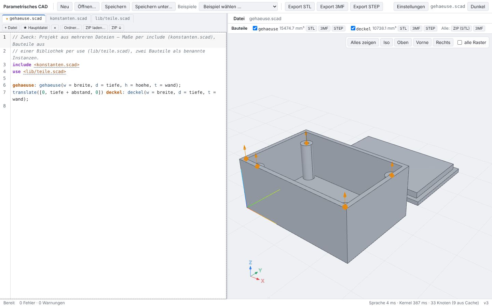
// Zweck: Projekt aus mehreren Dateien – Maße per include (konstanten.scad), Bauteile aus // einer Bibliothek per use (lib/teile.scad), zwei Bauteile als benannte Instanzen. include <konstanten.scad> use <lib/teile.scad> gehaeuse: gehaeuse(w = breite, d = tiefe, h = hoehe, t = wand); translate([0, tiefe + abstand, 0]) deckel: deckel(w = breite, d = tiefe, t = wand);
Das Beispielmenü öffnet examples/projekt-gehaeuse/ als Projekt: gehaeuse.scad (Hauptdatei, ★), konstanten.scad (per include) und lib/teile.scad (per use). Die Szene kennt die drei Dateien mit ihrer Rolle; die zwei benannten Instanzen auf oberster Ebene sind die Bauteile.
P02 Ordner öffnen, speichern, ZIP
„Ordner…“ liest alle .scad-Dateien eines Ordners (File System Access API; im Test ein nachgebildeter Ordner mit einer .txt-Datei, die ignoriert wird) und wählt die Hauptdatei: die Datei der obersten Ebene, die keine andere einbindet. Strg+S schreibt alle Dateien zurück in den Ordner. „ZIP ↓“ lädt das Projekt als ZIP herunter, „ZIP laden…“ lädt dieses ZIP wieder hoch (gemeinsamer Ordner wird entfernt, Hauptdatei wieder gehaeuse.scad).
P03 Datei wechseln
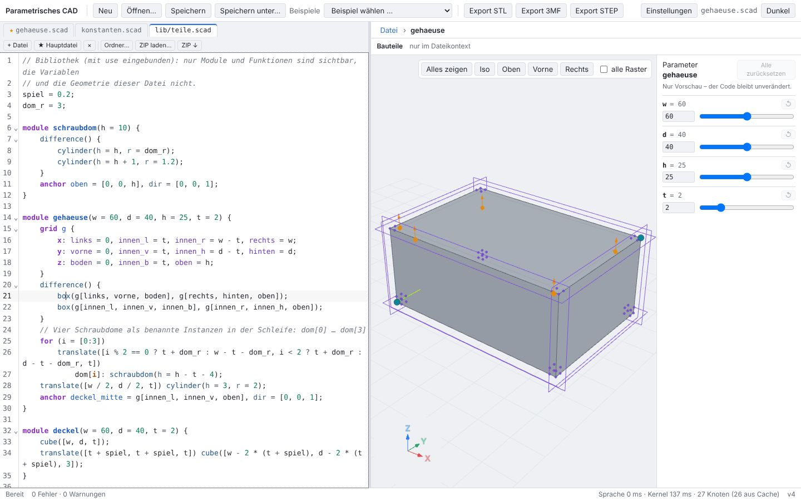
module gehaeuse(w = 60, d = 40, h = 25, t = 2) {
grid g {
x: links = 0, innen_l = t, innen_r = w - t, rechts = w;
y: vorne = 0, innen_v = t, innen_h = d - t, hinten = d;
z: boden = 0, innen_b = t, oben = h;
}
difference() {
box(g[links, vorne, boden], g[rechts, hinten, oben]);
box(g[innen_l, innen_v, innen_b], g[innen_r, innen_h, oben]);
}Ein Klick auf den Tab lib/teile.scad zeigt die Bibliothek; der Cursor im Modul gehaeuse macht es zum Kontext (Pfadleiste „Datei › gehaeuse“), Raster und Griffe gehören zur Bibliothek. Jede Datei behält ihren Text und ihre eigene Undo-Historie: Strg+Z in der Hauptdatei ändert die Bibliothek nicht, Strg+Z in der Bibliothek nimmt dort die Änderung zurück.
P04 Strg+Klick auf include
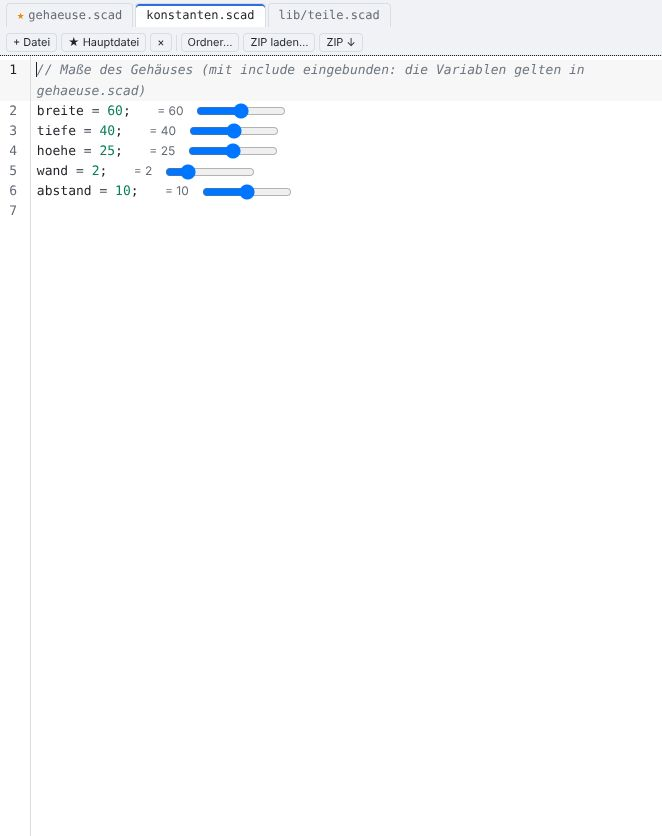
include <konstanten.scad> use <lib/teile.scad>
Der Pfad in include <…> und use <…> ist unterstrichen (Titel „Strg+Klick: Datei öffnen“). Strg+Klick öffnet die Datei relativ zur einbindenden Datei; ein einfacher Klick setzt nur den Cursor. In konstanten.scad erscheinen die Werte der Variablen am Zeilenende, weil sie per include in der Dateiauswertung gelten.
P05 Griff ändert die eingebundene Datei
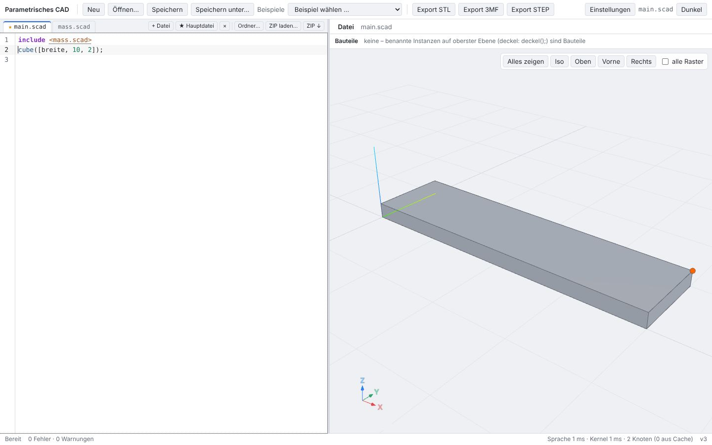
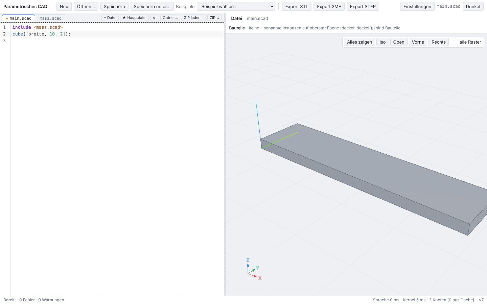
// main.scad include <mass.scad> cube([breite, 10, 2]); // mass.scad // Maße breite = 40;
Der Eckgriff des Quaders geht über die Variable breite auf das Literal in mass.scad. Ziehen schrieb „breite = 44;“ in mass.scad (nicht in den Editor der Hauptdatei); die Szene folgte. Das Ziehen ist ein Undo-Schritt in mass.scad. Ebenso ändert der Radiusgriff im Modul gehaeuse von lib/teile.scad das Literal r = 2 in Zeile 28 der Bibliothek, gehaeuse.scad bleibt gleich.
P06 Hover und Klick über Dateigrenzen
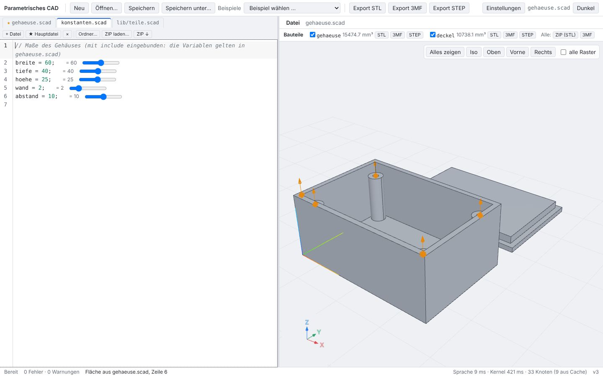
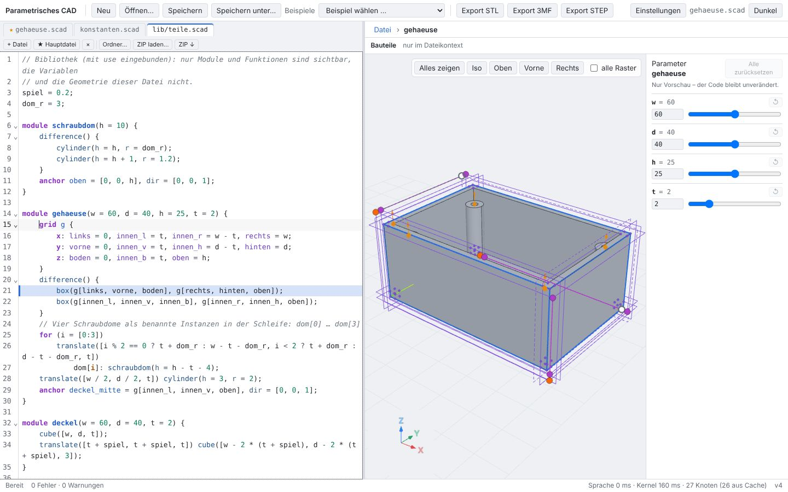
Liegt die Zeile einer Fläche in einer anderen Datei als der im Editor, nennt die Statuszeile Datei und Zeile; ein Klick öffnet die Datei an dieser Stelle. Der Doppelklick auf eine Instanz eines Moduls aus einer anderen Datei (gehaeuse aus lib/teile.scad) öffnet diese Datei in der Moduldefinition, der Kontext wird das Modul.
P07 Bauteilliste und Export pro Bauteil
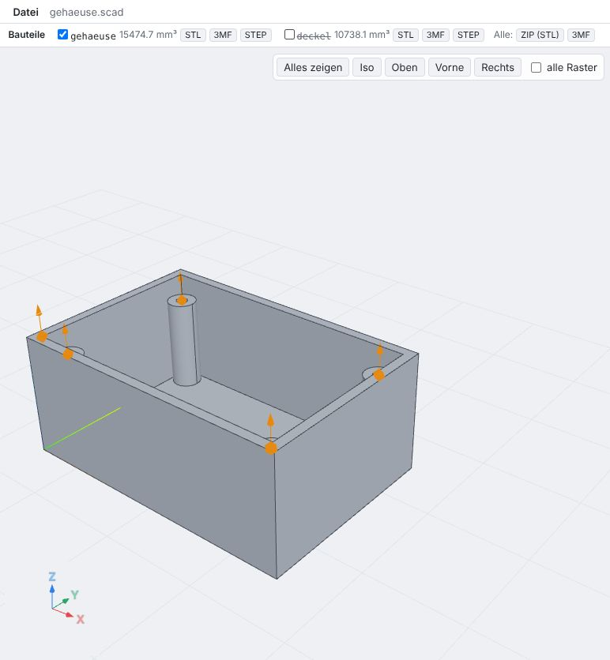
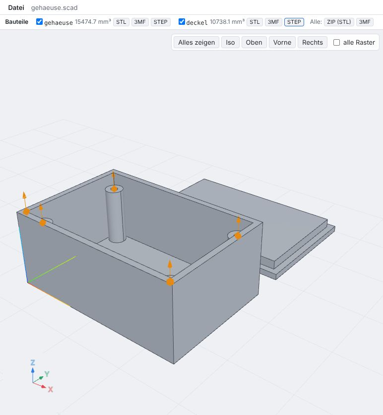
Die Bauteilleiste listet die Bauteile mit Volumen (Hülle als Tooltip). Ohne Haken wird das Bauteil nicht gezeichnet (das Modell wird aus den übrigen Teilbäumen zusammengesetzt). Export: deckel.stl (28 Dreiecke, Modellkoordinaten), alle Bauteile als ZIP mit einer STL je Bauteil, ein 3MF mit einem Objekt je Bauteil. STEP läuft über den Export des Kernels; Meldung: „Export fehlgeschlagen: STEP-Export: not supported by this kernel: export“.
P08 Benannte Instanzen in der Schleife
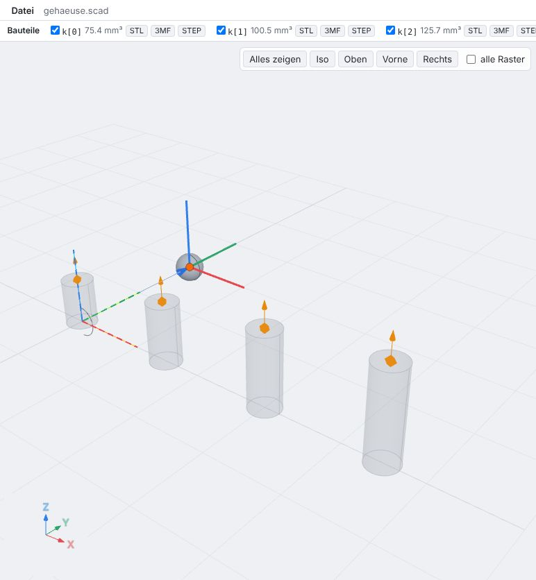
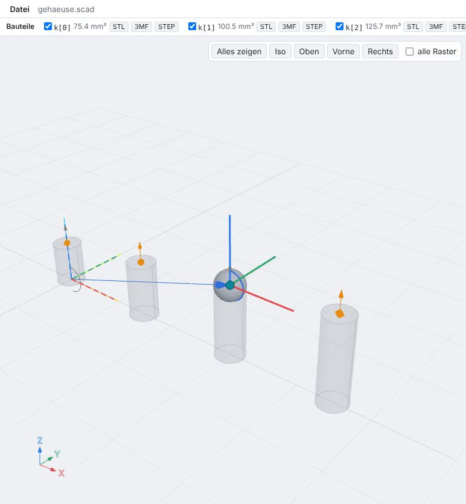
module halter(h = 8) {
cylinder(h = h, r = 2);
anchor oben = [0, 0, h], dir = [0, 0, 1];
}
for (i = [0:3]) translate([i * 15, 0, 0]) k[i]: halter(h = 6 + 2 * i);
translate(k[2].oben) sphere(2);for (i = [0:3]) … k[i]: halter(…) benennt vier Instanzen; ihre Anker sind wie bei benannten Instanzen sichtbar (Rauten) und Snap-Ziele, auf oberster Ebene sind k[0] … k[3] Bauteile. Der translate-Griff auf k[2].oben losgelassen schreibt „translate(k[2].oben)“; die Kugel sitzt bei [30, 0, 10].
P09 Fehler über Dateigrenzen
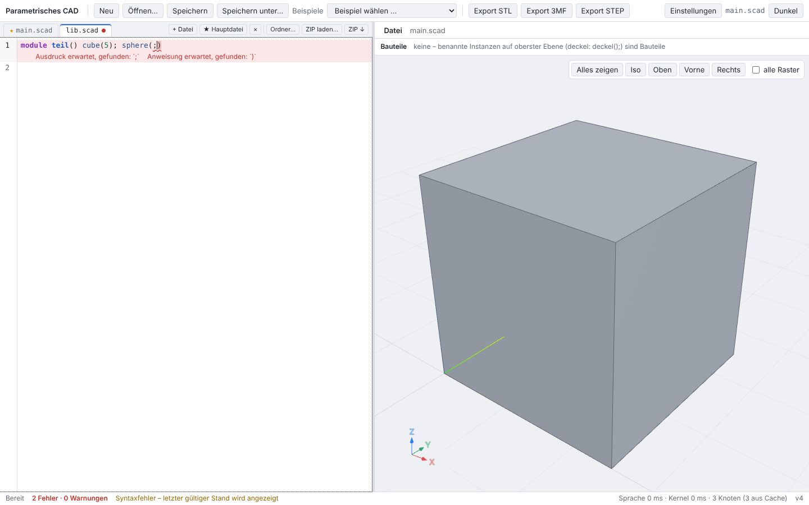
// main.scad use <lib.scad> include <fehlt.scad> teil();
Eine fehlende Datei ist ein Fehler an der include-Zeile der einbindenden Datei. Diagnosen tragen ihre Datei: der Syntaxfehler in lib.scad erscheint dort (Zeile rot) und markiert den Tab; die Ansicht behält den letzten gültigen Stand.